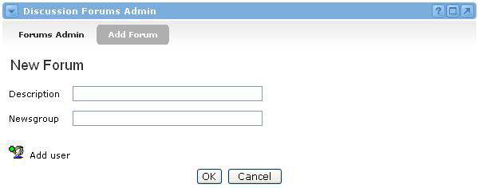

Discussion Forums Admin Channel
The Discussion Forums Admin Channel makes it possible for an administrator to create forums for community discussion, or to delete forums that are no longer relevant. This channel also allows the administrator to restrict forum access to certain users or groups, as well as set user and group permissions (i.e. viewing, adding and deleting messages, etc.) for each forum. Creating a New Forum
To create a new forum, follow these steps:
- Locate the Discussion Forums Admin channel and click the Add Forum link.
- You should now see the New Forum screen.
- Choose a name for this forum by typing it in the Description field.
- For the Newsgroup field, it is best to enter a single word in lower-case. This field is used to create a newsgroup on the community's news server. Newsgroups usually use a format similar to "university.academus.forums.homework" where "homework" might be the name of your discussion forum. By only entering one word into the Newsgroup field, it helps conform to the general standard.
- If you click the OK button at this time, the forum will be created, but no one will be able to view it. This is because you haven't yet assigned users to this forum. So instead of clicking the OK button, simply click the Add user icon on the lower left side of the channel.
